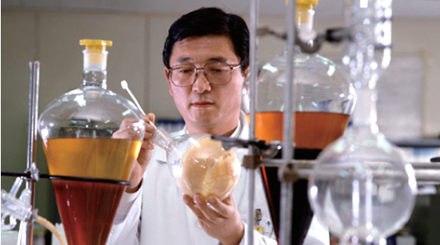

<!DOCTYPE html>
<html lang="en">
<head>
    <meta charset="UTF-8">
    <title>KT&G</title>
    <meta name="keywords" content="">
    <meta name="description" content="">
    <meta name="viewport" content="width=device-width, initial-scale=1.0">
    <link rel="stylesheet" href="css/normalize.css">
    <link rel="stylesheet" href="css/material.indigo-pink.min.css">
    <link rel="stylesheet" href="css/style.css">
</head>
<body>
<div class="wrapper wrapper-in" id="ktg">
    <div class="header-cont">
        <header class="header">
            <div class="top-header">
                <div class="header__logo">
                    <a href="index.html"></a>
                </div>
                <nav class="in-menu">
                    <ul class="in-menu__list">
                        <li class="in-menu__item active">
                            <p class="in-menu__link ">О компании</p>
                        </li>
                        <li class="in-menu__item ">
                            <a href="products.html" class="in-menu__link ">Наша продукция</a>
                        </li>
                        <li class="in-menu__item">
                            <a href="#" class="in-menu__link ">Технологии</a>
                        </li>
                        <li class="in-menu__item">
                            <a href="#" class="in-menu__link ">Работайте с нами</a>
                        </li>
                        <li class="in-menu__item">
                            <a href="#" class="in-menu__link ">Контакты</a>
                        </li>
                    </ul>
                </nav>
                <a href="registration.html" class="header__auth">
                    
                </a>
            </div>
    </header>
    <nav class="sub-menu-about js-menu-about" >
        <ul class="sub-menu__list">
            <li class="sub-menu__item ">
                <a href="#ktg" class="sub-menu__link active">KT&G</a>
            </li>
            <li class="sub-menu__item ">
                <a href="#history" class="sub-menu__link ">История</a>
            </li>
            <li class="sub-menu__item">
                <a href="#princip" class="sub-menu__link ">Принципы</a>
            </li>
            <li class="sub-menu__item">
                <a href="#ecology" class="sub-menu__link ">Экологический менеджмент</a>
            </li>
            <li class="sub-menu__item">
                <a href="#logo" class="sub-menu__link ">Наш логотип</a>
            </li>
            <li class="sub-menu__item">
                <a href="#security" class="sub-menu__link ">Охрана труда</a>
            </li>
        </ul>
    </nav>
    </div>
    <main class="main">
        <div class="in-container in-container-about" >
            <div class="small-menu" id="small-menu"></div>
            <section class="about-section section-company" >
                <h2 class="main__ttl main__ttl--dark">Компания KT&G!</h2>
                <p class="main__cnt">Korea Tomorrow&Global имеет за плечами более 110 лет опыта, является ведущей табачной компанией в Южной Корее и 5-й крупнейшей табачной компанией в мире.</p>
                <p class="main__cnt">Сегодня наша продукция представлена более чем в 50 странах мира, а портфель наших брендов включает в себя такие известные марки, как ESSE, Davidoff, RAISON, BOHEM, The One, THIS PLUS, Timeless TIME, Carnival и Cima. </p>
                <div class="about-cnt-block clearfix">
                    <div class="about-cnt-block__left">
                        <p class="about__cnt--big">Давние традиции, современные технологии и социальная ответственность</p>
                        <p class="main__cnt">Российский рынок, на котором компания действует с 2003 года, является одним из важнейших для KT&G. Наибольшую популярность в России завоевали наши марки Esse, Esse Lights, Esse Mentol и Esse Filds.</p>
                    </div>
                    
                </div>
            </section>

            <a id="history2"></a>
            <section class="about-section" id="history">
                <h2 class="main__ttl main__ttl--dark">История компании</h2>
                    <div class="about__tbl">
                        <div class="about__tbl-row">
                            <div class="about__cell">
                                <h3 class="about__ttl3">1899</h3>
                                <div class="about__line"></div>
                                <p class="about__tbl-cnt">Ключевой датой в истории KT&G стал 1899 год, когда под контролем императорского дома Кореи было основано агентство по производству женьшеня.</p>
                            </div>
                            <div class="about__cell">
                                <h3 class="about__ttl3">1908</h3>
                                <div class="about__line"></div>
                                <p class="about__tbl-cnt">В 1908 году правительство Кореи приняло закон о налогообложении табачных изделий и основало табачную монополию, а в 1952 году две монополии объединились.</p>
                            </div>
                            <div class="about__cell">
                                <h3 class="about__ttl3">1960</h3>
                                <div class="about__line"></div>
                                <p class="about__tbl-cnt">К середине 1960-х годов производство табачных изделий в стране выросло настолько, что Южная Корея начала экспорт сигарет за рубеж.</p>
                            </div>
                            <div class="about__cell">
                                <h3 class="about__ttl3">1989</h3>
                                <div class="about__line"></div>
                                <p class="about__tbl-cnt">Конкуренция с западными брендами привела к тому, что Управление Монополии пошло на масштабную. 1989 году появилась корпорация Korea Tobacco & Ginseng Corporation.</p>
                            </div>
                        </div>

                        <div class="about__tbl-row">
                            <div class="about__cell">
                                <h3 class="about__ttl3">1990</h3>
                                <div class="about__line"></div>
                                <p class="about__tbl-cnt">В 1990 году, активно расширяясь и закрепляясь на зарубежных рынках, компания смогла войти и на рынок Советского Союза, где уже ощущался острый дефицит сигарет.</p>
                            </div>
                            <div class="about__cell">
                                <h3 class="about__ttl3">2002</h3>
                                <div class="about__line"></div>
                                <p class="about__tbl-cnt">В 2002 году корпорация была полностью приватизирована, сменила свое название на KT&G и объединилась с биотехнологической компанией Celtrion.</p>
                            </div>
                            <div class="about__cell">
                                <h3 class="about__ttl3">2003</h3>
                                <div class="about__line"></div>
                                <p class="about__tbl-cnt">В Российской Федерации KT&G на постоянной основе действует с 2003 года, инвестировав в строительство фабрики в Калужской области, которое началось в 2008 году.</p>
                            </div>
                            <div class="about__cell">
                                <h3 class="about__ttl3">2013</h3>
                                <div class="about__line"></div>
                                <p class="about__tbl-cnt">В 2013 году была запущена линейка сигарет Blooming.
                                    На сегодняшний день ESSE является одной из наиболее популярных марок сигарет в России, а ее ассортимент постоянно расширяется.</p>
                            </div>
                        </div>
                    </div>
            </section>

            <a id="princip2"></a>
            <section class="about-section" id="princip">
                <h2 class="main__ttl main__ttl--dark">Наши принципы</h2>
                <div class="about-cnt-block clearfix">
                    <div class="about-cnt-block__left about-cnt-block__left--big">
                        <p class="about__cnt--big about__ttl4--big">Осознавая ответственность</p>
                        <p class="main__cnt">Которую возлагает на себя любая компания, действующая на рынке табачной продукции, мы, тем не менее, испытываем гордость за то, насколько тщательно, открыто и этично мы подходим к управлению бизнесом. </p>

                        <p class="about__cnt--big about__ttl4--big">Расширяясь и завоевывая новые рынки</p>
                        <p class="main__cnt">Мы вместе с тем увеличиваем свой вклад в развитие общества, охрану экологии и продвижение инноваций в сельском хозяйстве, медицине и биотехнологиях.</p>

                        <p class="about__cnt--big about__ttl4--big">Мы инвестируем в современные технологии и в специалистов</p>
                        <p class="main__cnt">Создавая новые рабочие места и предлагая только качественную продукцию, соответствующую экологическим и санитарным нормам.</p>

                    </div>
                    
                </div>
            </section>

            <a id="ecology2"></a>
            <section class="about-section" id="ecology">
                <h2 class="main__ttl main__ttl--dark">Экологический менеджмент</h2>
                <p class="about__cnt--big">KT&G активно развивает на своих производствах экологический менеджмент</p>

                <p class="main__cnt">Будучи современной, социально ответственной компанией, KT&G активно развивает на своих производствах экологический менеджмент. Для нас этот аспект деятельности является исключительно важным, поэтому в KT&G принят комплексный подход к управлению, объединяющий мероприятия, передовые технологии и обучение сотрудников основам экологического менеджмента.</p>

                <div class="about-cnt-block clearfix">
                    
                    <div class="about-cnt-block__right">
                        <p class="main__cnt">На своих производствах по всему миру мы осуществляем систематический контроль за выбросами в атмосферу, постоянно увеличиваем долю экологически безопасных технологий и следуем всем экологическим нормам, которые установлены законодательством.</p>
                    </div>
                </div>
            </section>

            <a id="logo2"></a>
            <section class="about-section" id="logo">
                <h2 class="main__ttl main__ttl--dark">Наш логотип</h2>
                <p class="about__cnt--big">В 2002 году Korea Tobacco & Ginseng приняла новое название KT&G и полностью сменила фирменный стиль. </p>

                <p class="main__cnt">Мы глубоко привержены своим традициям, однако считаем, что необходимо идти в ногу со временем,и сегодня минимализм и элегантность переработанного логотипа KT&G как нельзя лучше олицетворяют наши основные ценности. </p>
                
                <p class="main__cnt">Логотип символизирует наш этичный и открытый подход к бизнесу, нашу заботу о клиентах и экологии.Более того, он олицетворяет наше стремление донести эти ценности до миллионов людей во всем мире, поскольку KT&G стремится расширить свое влияние, став глобальным явлением в мировой табачной промышленности.</p>
            </section>

            <a id="security2"></a>
            <section class="about-section" id="security">
                <h2 class="main__ttl main__ttl--dark">Охрана труда</h2>
                <p class="main__cnt">В соответствии с требованиями законодательства Российской Федерации (Федеральный закон от 28.12.2013N 426-ФЗ), компания KT&G систематически проводит оценку условий труда своих сотрудников.</p>
                <p class="main__cnt">За последние годы нам удалось практически полностью исключить вредные и опасные для здоровья сотрудников факторы на наших производствах.</p>
                <p class="main__cnt">Вводя в эксплуатацию вновь организованные рабочие места, мы стремимся создать оптимальные условия труда для наших специалистов, используя современные, экологически чистые технологии и материалы. </p>
            </section>

        </div>
    </main>
</div>
    <footer class="footer footer-in">
        <div class="container">
            <div class="footer-menu ">
                <div class="footer-menu__block js-menu-about">
                    <p class="footer-menu__ttl js-open-menu">О компании</p>
                    <ul class="footer-menu__list">
                        <li class="footer-menu__item">
                            <a href="#history" class="footer-menu__link">История</a>
                        </li>
                        <li class="footer-menu__item">
                            <a href="#princip" class="footer-menu__link">Принципы</a>
                        </li>
                        <li class="footer-menu__item">
                            <a href="#security" class="footer-menu__link">Охрана труда</a>
                        </li>
                        <li class="footer-menu__item">
                            <a href="#" class="footer-menu__link">Контакты</a>
                        </li>
                    </ul>
                </div>

                <div class="footer-menu__block js-menu-about">
                    <p class="footer-menu__ttl js-open-menu">Технологии</p>
                    <ul class="footer-menu__list">
                        <li class="footer-menu__item">
                            <a href="#ecology" class="footer-menu__link">Экологический менеджмент</a>
                        </li>
                        <li class="footer-menu__item">
                            <a href="#" class="footer-menu__link">Контроль качества</a>
                        </li>
                    </ul>
                </div>

                <div class="footer-menu__block ">
                    <p class="footer-menu__ttl js-open-menu">Карьера</p>
                    <ul class="footer-menu__list">
                        <li class="footer-menu__item">
                            <a href="#" class="footer-menu__link">Преимущества</a>
                        </li>
                        <li class="footer-menu__item">
                            <a href="#" class="footer-menu__link">Вакансии</a>
                        </li>
                    </ul>
                </div>

                <div class="footer-menu__block ">
                    <p class="footer-menu__ttl js-open-menu">Наша продукция</p>
                    <ul class="footer-menu__list">
                        <li class="footer-menu__item">
                            <a href="products.html#original" class="footer-menu__link">ESSE Original</a>
                        </li>
                        <li class="footer-menu__item">
                            <a href="products.html#premium2" class="footer-menu__link">ESSE Premium</a>
                        </li>
                        <li class="footer-menu__item">
                            <a href="products.html#exchange2" class="footer-menu__link">ESSE Exchange</a>
                        </li>
                        <li class="footer-menu__item">
                            <a href="products.html#cafe2" class="footer-menu__link">ESSE Cafe</a>
                        </li>
                        <li class="footer-menu__item">
                            <a href="products.html#mini2" class="footer-menu__link">ESSE Mini</a>
                        </li>
                        <li class="footer-menu__item">
                            <a href="#" class="footer-menu__link">ESSE Bloomberg</a>
                        </li>
                    </ul>
                </div>

                <div class="footer-menu__block">
                    <p class="footer-menu__ttl js-open-menu">Партнерам</p>
                    <ul class="footer-menu__list">
                        <li class="footer-menu__item">
                            <a href="#" class="footer-menu__link">Специальные предложения</a>
                        </li>
                        <li class="footer-menu__item">
                            <a href="#" class="footer-menu__link">Вопросы и ответы</a>
                        </li>
                    </ul>
                </div>
            </div>

            <div class="footer-bot">
                <div class="footer-bot__logo">
                    
                </div>
                <p class="footer-bot__copyright">&copy; 2010 KT&G Russia. Все права защищены.</p>

                <div class="footer-bot__social">
                    <div class="footer-bot__social-item">
                        <a href="#" class="footer-bot__social-link social-fb"></a>
                    </div>
                    <div class="footer-bot__social-item">
                        <a href="#" class="footer-bot__social-link social-tw"></a>
                    </div>
                </div>
            </div>
        </div>
    </footer>


<script type="text/javascript" src="js/jquery-3.2.1.min.js"></script>
<script type="text/javascript" src="js/material.min.js"></script>
<script type="text/javascript" src="js/menu.js"></script>
<script>
    $(document).ready(function(){

        $('.js-open-menu').click(function(){
            if(!$(this).closest('.footer-menu__block').hasClass('active')){
                $('.footer-menu__block').removeClass('active');
                $('.footer-menu__list').slideUp();
                $(this).closest('.footer-menu__block').addClass('active').find('.footer-menu__list').slideDown(200);
            } else {
                $(this).closest('.footer-menu__block').removeClass('active').find('.footer-menu__list').slideUp();
            }
        });
    });

    jQuery(window).scroll(scroll_active2);

</script>
</body>